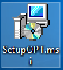

Cài đặt chương trình OPT Sale
- Đăng nhập máy tính All-in-one với quyền Administrator. Ngoài ra, yêu cầu máy tính cài đặt cần phải có dotNet Framework 4.5.2.
- Nếu chưa cài framework này, cần cài đặt trước khi bắt đầu cài BHTĐ. Tải phiên bản Offline Installer ở trang chủ Microsoft tại đây
- Click vào file “SetupOPT.msi”  là file dùng để cài đặt chương trình để bắt đầu cài đặt.
- Ở cửa sổ bật lên, người dùng click vào ô “Next” để tiếp tục cài đặt. Nếu hủy cài đặt, có thể chọn vào “Cancel” hoặc đóng cửa sổ cài đặt bằng dấu X ở góc trên cùng bên phải của cửa sổ
- Cửa số tiếp theo dùng để nhập các thông tin cấu hình thông tin kết nối tới hệ thống BHTĐ đã được cài đặt từ trước đó. Các thông tin này bao gồm:
+ Host: Là địa chỉ IP của máy tính đã cài BHTĐ từ trước đó. Mặc định là “192.168.1.101” là địa chỉ IP của máy EGAS. Nếu cài BHTĐ trên máy tính khác, cần thay đổi giá trị Host này theo IP tương ứng.
+ Port: Là cổng kết nối tương ứng đến hệ thống BHTĐ trên máy cài đặt chương trình BHTĐ. Mặc định là 8000.
+ Access Token: Là Token dùng để kết nối tới dịch vụ BHTĐ. Mặc định là “EAAFrIE64ZBMIBAP74JwV4Cbfbj9RoSP”.
Lưu ý: Các giá trị này phải giống các giá trị đã được khai báo khi cài đặt BHTĐ. Nếu không đúng sẽ không thể tiến hành kết nối
- Cửa số tiếp theo dùng để nhập các thông tin cấu hình tại màn hình OPT. Các thông tin này bao gồm:
+ Company Name: Là tên của đơn vị triển khai bán hàng tự động. Lưu ý: ô này hiện không gõ được Tiếng Việt hoàn chỉnh.
+ Client Id: Là mã của máy OPT cài đặt chương trình. Dùng để phân biệt nếu cửa hàng có nhiều máy OPT. Mặc định là 1. Lưu ý: ô này bắt buộc phải nhập kiểu số. Giá trị này tương ứng giá trị tại ô ClientId trên chức năng Cấu hình thông tin OPT tại EGAS.
+ Product Group: Là nhóm vòi bơm được hiển thị dưới dạng danh sách trên màn hình OPT khi mua hàng. Mặc định là 0. Lưu ý: nếu giá trị này = 0 tức là OPT sẽ hiển thị tất cả các vòi bơm ở chế độ TPV. Giá trị > 0 thì tương ứng OPT sẽ hiển thị nhóm vòi bơm theo chức năng Cấu hình vị trí vòi bơm bán tự phục vụ (S3) tại EGAS.
+ Card Reader Port: Là cổng Com dùng để kết nối tới đầu đọc thẻ của cột OPT. Mặc định là 2.
- Cửa số tiếp theo dùng để nhập các thông tin cấu hình các hình thức thanh toán tại màn hình OPT. Các thông tin này bao gồm:
+ Card Napas: Là thanh toán thẻ tại OPT. Mặc định là true.
+ Cashing: Là thanh toán tiền mặt tại OPT. Mặc định là false.
+ Wallet Online: Là thanh toán qua ví điện tử (Momo). Mặc định là true.
Lưu ý: Tùy vào số lượng các hình thức thanh toán tại cửa hàng mà người dùng tắt/ bật các hình thức phù hợp. Hiện tại hệ thống chưa hỗ trợ hình thức tiền mặt.

- Cửa sổ tiếp theo dùng để cấu hình vị trí cài đặt chương trình OPT trên máy All-in-one. Mặc định, hệ thống sẽ được cài đặt vào thư mục “C:\Program Files (x86)\BHTD\OPTSale\”. Người dùng có thể chỉnh sửa vị trí cài đặt này nếu cần.
Option lựa chọn “Everyone” hoặc “Just me” dùng để định nghĩa chương trình này cài đặt cho tất cả các User trên máy hay chỉ cho User hiện tại của máy tính. Mặc định chọn “Everyone”. Lưu ý: không nên chọn “Just me” vì máy tính bán hàng có thể có nhiều User khác nhau sử dụng
- Cửa sổ tiếp theo dùng để xác nhận việc cài đặt chương trình. Người dùng chọn vào “Next” để bắt đầu việc cài đặt. Nếu thấy các thông tin cấu hình chưa đúng, có thể chọn “Back” để kiểm tra lại và chỉnh sửa theo các bước bên trên nếu cần.
- Lưu ý: Khi chọn bắt đầu cài đặt, người dùng cần có bước xác thực quyền Administrator của máy tính. Việc cài đặt sẽ mất khoảng 2~5 giây.
- Khi cài đặt thành công, màn hình hiển thị bước cuối cùng như hình sau:
Nếu không đến được màn hình như hình 26 thì tức là cài đặt không thành công. Có thể thử cài đặt lại theo các bước trên.
- Khi cài đặt thành công, trên màn hình Desktop của máy tính sẽ xuất hiện Icon của chương trình . Click vào icon để bắt đầu bán hàng tự động.
- Sau khi cài, cấu hình cho chương trình chạy Compatibility để chương trình không bị crash khi mất kết nối server
Lưu ý: Khi mở chương trình lên sẽ có yêu cầu cấp quyền Admin, chọn vào ô “Yes” để mở chương trình. Khi cửa sổ được mở ra, nếu có thông báo không nối được đến Server thì cần kiểm tra lại việc kết nối. Nếu không hiển thị các mặt hàng thì cần kiểm tra lại việc Cấu hình vị trí vòi bơm bán hàng Tự phục vụ hoặc ấn LoadS3Config trong màn hình S3Scadar.
Để tùy biến chương trình OPTSale có thể vào thư mục Config trong thư mục cài đặt chương trình để cấu hình như sau:
{
"clientConfig": {
"clientId": 1,
"companyName": "CHI NHÁNH XĂNG DẦU VĨNH PHÚC - KV1",
"payMethod": {
"card": true,
"cash": false,
"walletOnline": true
},
"productGroup": "1",
"stepPaymentATM": "Quẹt thẻ > Nhấn Enter > Nhập Mã Pin > Nhấn Enter"
},
"serverConfig": {
"host": "192.168.1.101",
"port": "8000",
"accessToken": "EAAFrIE64ZBMIBAP74JwV4Cbfbj9RoSP"
},
"systemConfig": {
"payTimeOut": 120,
"pumpStateTimeOut": 5,
"rowNumberRePrint": 20,
"printPort": 1,
"cardReaderPort": 2,
"cardTickPointTimeout": 40,
"useButtonCardTickPoint": true,
"usePlusButton": true,
"usebtnCardTickPoint": true,
"usebtnBill": true,
"usebtnRewardPoint": true,
"interfaceTimeout": 15
}
}
- payTimeOut: Thơi gian chờ quẹt thẻ trên máy POS
- pumpStateTimeOut: Thời gian chờ kiểm tra trạng thái vòi bơm
- rowNumberRePrint: Thời gian chờ kiểm tra trạng thái vòi bơm
- printPort: Thời gian chờ kiểm tra trạng thái vòi bơm
- cardReaderPort: Thời gian chờ kiểm tra trạng thái vòi bơm
- cardTickPointTimeout: Thời gian chờ đọc thẻ tích điểm
- useButtonCardTickPoint: Cấu hình lựa chọn tích điểm bằng nút checkbox hoặc sử dụng nút bấm
- usePlusButton: Cấu hình sử dụng dấu + tại màn hình đặt lượng theo tiền/lit
- usebtnCardTickPoint: Cấu hình sử dụng dấu + tại màn hình đặt lượng theo tiền/lit
- usebtnBill: Cấu hình sử dụng dấu + tại màn hình đặt lượng theo tiền/lit
- usebtnRewardPoint: Cấu hình sử dụng dấu + tại màn hình đặt lượng theo tiền/lit
- interfaceTimeout: Thời gian chờ màn hình tự chuyển về Home khi không có tác động.